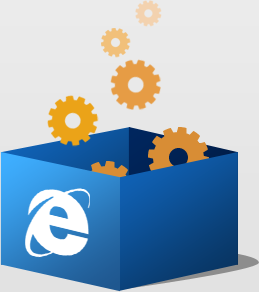

很抱歉，您的浏览器太古老了，需要安装插件才能使用本系统
下载浏览器插件
适用于 Windows7 / Vista / XP SP2 的 Internet Explorer 6,7,8,9
安装浏览器插件，给你新的体验：
- 提高您的网页浏览速度
- 在使用该插件后，网站可获得更快的响应速度
- 使用更多高级功能
- 通过该插件，网站可向您提供基于开放技术的新功能
- 不会改变您原来的上网方式
- 该插件是通过您当前使用的浏览器在后台运行的
Powered by Google Chrome Frame © Google
